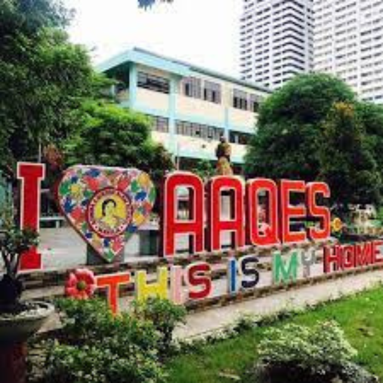
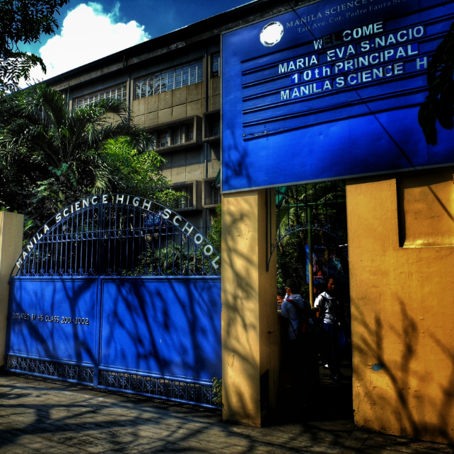
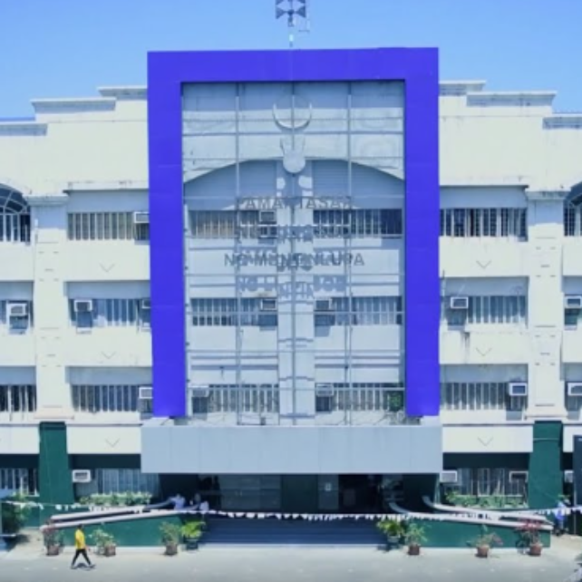

Who Am I?
I'm Janssen Ainsley R. Sison, but you can call me "Jans" for short. I live in San Pedro Laguna and I was born on May 7, 1996.
My hobbies are playing online games, watching anime, and hanging out with my friends.


I'm a working student, as a copy writer, writing articles about online businesses, courses and coaches in other countries.
Family Background
We're a family of 4. My mother works in PGH as a nursing attendant and my father is now a stay-in house husband since he got a mild stroke last 2019.
He's doing better now and he's the one taking care of my little sister, who's now attending Estrella Elementary School as a Grade 1 student.
Schools Attended
I attended Aurora A. Quezon Elementary School for my primary education
and Manila Science High School for my secondary education.
At present, I'm current enrolled at Pamantasan ng Lungsod ng Muntinlupa, BS Computer Science, as a transferee student.
Expectations
As for my expectations for the subject Information Management, I just want to be literate in managing and handling complex
situations concerning databases and such. And the most important part is I just want to have fun lerning new things.
Five Years From Now
Five years from now, just like my dream when I was at UPM, I wanted to be a game developer. I want to make games that
people will love just like how I love playing the games that I'm still playing until today.